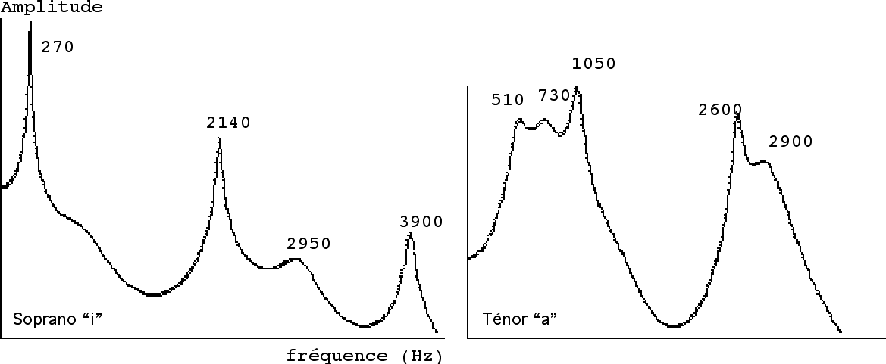

La voix chantée
Le modèle source–filtre
La voix peut être décrite par deux éléments principaux :
- une source produite par la vibration des plis vocaux ;
- un filtre constitué par le conduit vocal : pharynx, bouche et éventuellement cavités nasales.
La source produit une série de partiels. Le conduit vocal renforce certaines régions du spectre et en atténue d’autres.

Cette séparation explique qu’une personne puisse chanter plusieurs voyelles sur une même hauteur : la fréquence fondamentale reste stable tandis que la forme du conduit vocal change.
La source vocale
L’air envoyé par les poumons met les plis (cordes vocales) vocaux en vibration. Le mouvement ouvre et ferme périodiquement la glotte et crée une source sonore riche en harmoniques.
La fréquence fondamentale dépend notamment de la longueur, de la masse et de la tension des plis vocaux :
- des plis plus longs ou plus massifs tendent à produire une fréquence plus grave ;
- une tension plus importante tend à produire une fréquence plus aiguë.
Les valeurs suivantes sont des ordres de grandeur données à titre indicatif :
| Type de voix | Étendue approximative |
|---|---|
| basse | 65 à 330 Hz |
| ténor | 123 à 520 Hz |
| alto | 175 à 700 Hz |
| soprano | 260 à 1 300 Hz |
Les tessitures réelles varient selon les personnes, les traditions vocales et les techniques employées.
Lorsque l’intensité vocale augmente, les harmoniques élevés ont souvent relativement plus d’énergie, ce qui contribue à une impression de brillance et de puissance.
Le conduit vocal comme filtre
Le son de la source traverse le conduit vocal. Ses résonances renforcent certaines bandes de fréquences appelées formants.

Un formant n’est pas un harmonique particulier. C’est une région fréquentielle dans laquelle les harmoniques de la source sont renforcés. Lorsque la hauteur chantée change, les harmoniques se déplacent, mais les régions formantiques liées à la voyelle restent relativement stables.
Les voyelles
La forme de la langue, l’ouverture de la mâchoire et la position des lèvres modifient les résonances du conduit vocal. Les deux premiers formants jouent un rôle particulièrement important dans l’identification des voyelles.
On peut observer qu’une même voyelle n’a pas exactement les mêmes fréquences formantiques chez tous les chanteurs. Le cerveau reconnaît néanmoins des relations générales entre ces formants.
Les consonnes utilisent également des indices spectraux et temporels : explosions brèves, bruits de friction, interruptions ou transitions rapides entre formants.
Projection et formant du chanteur
Les voix de chanteurs classiques graves et médiums peuvent présenter un renforcement spectral entre environ 2 et 3 kHz. Cette région, souvent appelée formant du chanteur, correspond à une zone où l’orchestre possède relativement moins d’énergie et où l’oreille est sensible. Elle aide la voix à émerger sans amplification.
Il ne s’agit pas simplement de « chanter plus fort », mais de produire une répartition spectrale favorable à la projection.
Chant dans l’aigu
Lorsque la fondamentale devient très élevée, les harmoniques s’éloignent les uns des autres. Il peut alors ne plus y avoir d’harmonique proche d’une résonance utilisée pour identifier une voyelle.
Les sopranos peuvent ajuster le premier formant afin de renforcer la fondamentale ou un harmonique proche. La puissance vocale est améliorée, mais la voyelle peut devenir moins facilement identifiable.
Cette situation illustre un compromis fréquent entre :
- hauteur ;
- intensité ;
- stabilité ;
- intelligibilité ;
- qualité du timbre.
Observer la voix
Une forme d’onde permet d’observer la périodicité de la source. Un spectre montre les harmoniques et l’enveloppe formantique. Un sonagramme permet de suivre :
- la mélodie ;
- le vibrato (qui permet de mettre en valeur les formants) ;
- les changements de voyelles ;
- les consonnes ;
- l’évolution du timbre.
À retenir
- Les plis vocaux produisent une source riche en harmoniques.
- Le conduit vocal agit comme un filtre résonant.
- Les formants déterminent en grande partie les voyelles.
- La hauteur dépend principalement de la source ; l’identité vocalique dépend principalement du filtre.
- La projection vocale repose en partie sur une organisation favorable du spectre.